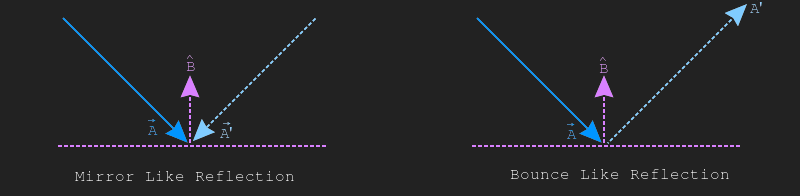
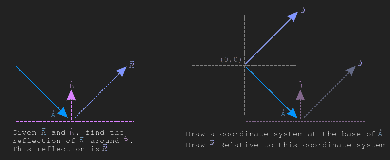
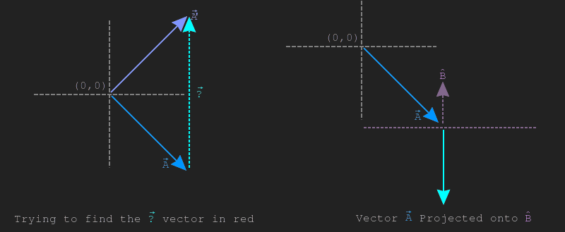

Vector reflection
The word reflection here is a bit ambigous. Given two vectors, \(\vec{A}\) and \(\vec{B}\), reflecting \(\vec{A}\) around \(\vec{B}\) can be interpreted as reflecting the vector across a line symetrically (like a mirror) or reflecting a ball or ray of light off a flat surface (this is more of a bounce). The image below shows both of these use cases.
In games, reflection is often interpreted in the bounce context, it's most often used for lighting calculations or physics. Consider vectors \(\vec{A}\) and \(\vec{B}\), let's find the reflection of \(\vec{A}\) around \(\vec{B}\), we will call this reflection \(\vec{A'}\). For this example, it's safe to assume that \(\vec{B}\) is of unit length (\(\hat{B}\)).
The left side of the below image shows \(\vec{A}\), \(\hat{B}\) and \(\vec{A'}\). The right side shows a coordinate system (which \(\vec{A}\) is already relative to) and draws the reflected vector \(\vec{A'}\) on that coordinate as well.
We can see from the picture above that to get from \(\vec{A}\) to \(\vec{A'}\), we need to add some vector to \(\vec{A}\). This vector that needs to be added is going to be in the direction of \(\hat{B}\).
The left side of the image below shows the mistery vector we are trying to find. The right side of the image below shows projection of \(\vec{A}\) onto \(\vec{B}\).
The above image shows that the length of \(proj_{\hat{B}} \vec{A}\) is \(\frac{1}{2}\) the length of the mistery vector \(\vec{?}\). You will also notice that the projection \(proj_{\hat{B}} \vec{A}\) points in the wrong direction. This leads to the conclusion that the reflection \(reflect_{\hat{B}}\vec{A}\) is two times the projection of \(proj_{\hat{B}}\vec{A}\) subtracted from the original vector \(\vec{A}\). The formula describing this is listed below:
$$ reflect_{\vec{B}}\vec{A} = \vec{A} - 2\frac{\vec{A} \cdot \vec{B}}{\|B\|^{2}}\vec{B} $$
All of the optimizations that applied to vector projection / rejection apply here as well. This means that as long as \(\vec{B}\) is normalized, no division is necesarry. The formula assuming \(\vec{B}\) is normalized is listed below.
$$ reflect_{\hat{B}}\vec{A} = \vec{A} - 2(\vec{A} \cdot \hat{B})\hat{B} $$
Implementing scaling in code is trivial:
vec Reflection(vec a, vec b) {
float magBsq = MagnitudeSq(b);
assert(magBsq != 0);
float scale = Dot(a, b) / magBsq;
vec proj_2x = Scale(b, scale * 2.0);
return Sub(a, proj_2x);
}
In the example below, click and drag the blue circle to change the blue vector. Click and drag the green arrow to change the normal that the blue vector is being reflected around.